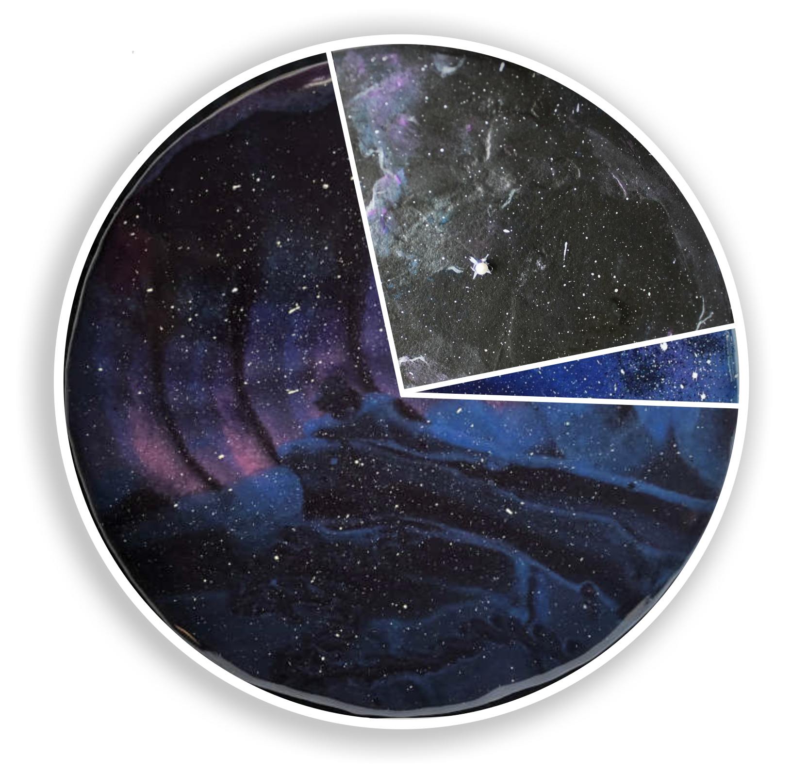
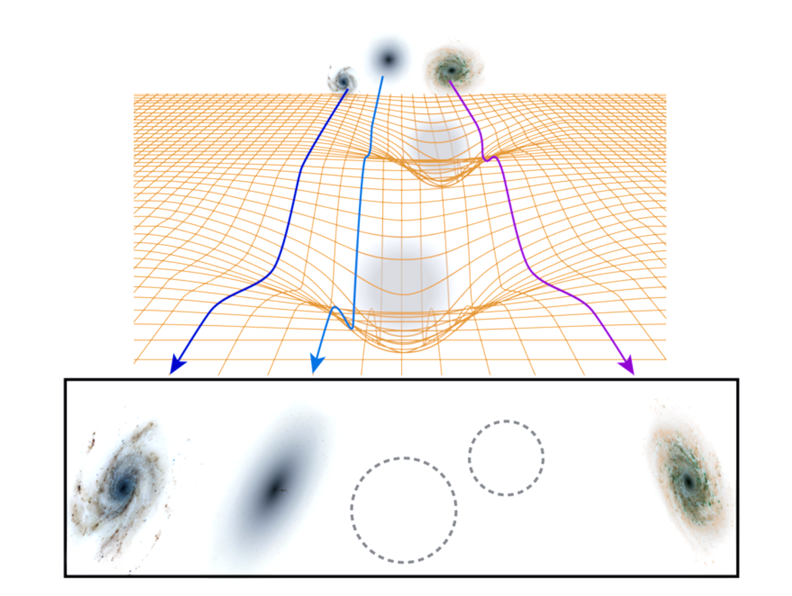

Research
I work on observational cosmology with large imaging surveys, focusing on how weak gravitational lensing can be turned into precise and reliable constraints on the physics of the Universe. Most of my research has been carried out within the Dark Energy Survey (DES), where I contributed to both the Year 3 and the final Year 6 analyses.
Standard Model of Cosmology
Modern cosmology is remarkably successful at describing the Universe with a simple model, often referred to as ΛCDM. In this framework, the growth of cosmic structures and the expansion history of the Universe are governed by a combination of dark matter, dark energy, and gravity.
Large galaxy surveys test this model by mapping the distribution of galaxies and matter across cosmic time. DES was designed precisely for this purpose: to use deep, wide-field imaging of hundreds of millions of galaxies to measure cosmic structure and constrain cosmological parameters with high precision.
Weak gravitational lensing
Weak gravitational lensing is one of the most powerful probes used by DES. It relies on measuring tiny, coherent distortions in the observed shapes of distant galaxies, caused by the deflection of light by intervening matter. Although the effect on any single galaxy is extremely small, averaging over millions of galaxies reveals how matter — including dark matter — is distributed throughout the Universe. (Large, visually striking weak-lensing figure) In DES, weak lensing enters the cosmological analysis primarily through three two-point correlation functions (3×2pt), which combine galaxy clustering, galaxy–galaxy lensing, and cosmic shear. Together, these measurements allow us to connect galaxies to the underlying matter field and to extract cosmological information.
From weak lensing to cosmological results
 The final goal of a weak-lensing analysis is a cosmological constraint. In DES Year 6, this means combining all lensing and clustering measurements into a single, coherent inference framework.
(Example Y6 cosmology plot)
This type of result encapsulates years of work: precise measurements, extensive validation, and careful modeling of astrophysical and observational effects. Achieving this level of robustness requires both accurate measurements and reliable models.
The final goal of a weak-lensing analysis is a cosmological constraint. In DES Year 6, this means combining all lensing and clustering measurements into a single, coherent inference framework.
(Example Y6 cosmology plot)
This type of result encapsulates years of work: precise measurements, extensive validation, and careful modeling of astrophysical and observational effects. Achieving this level of robustness requires both accurate measurements and reliable models.
Measurements: galaxy–galaxy lensing
One of the key measurements in DES is galaxy–galaxy lensing, which quantifies how foreground galaxies distort the shapes of background galaxies. This signal directly links visible galaxies to the surrounding matter distribution and plays a central role in the 3×2pt analysis. (Galaxy–galaxy lensing figure from your paper) For DES Year 6, I led the measurement and validation of the galaxy–galaxy lensing signal across multiple galaxy samples and redshift bins. This work involved extensive null tests, robustness checks, and consistency tests to ensure that the measured signal could be safely used for cosmology. (Here you can briefly add one or two technical keywords, e.g. scale cuts, systematics validation, covariance, for experts.)Modeling: redshift distributions
 Interpreting weak-lensing measurements also requires accurate knowledge of galaxy distances. In imaging surveys like DES, these distances are estimated from galaxy colours, leading to uncertainties that must be carefully modeled and propagated into the cosmological analysis.
(Redshift distribution figure)
DES uses two complementary approaches to calibrate redshift distributions:
Interpreting weak-lensing measurements also requires accurate knowledge of galaxy distances. In imaging surveys like DES, these distances are estimated from galaxy colours, leading to uncertainties that must be carefully modeled and propagated into the cosmological analysis.
(Redshift distribution figure)
DES uses two complementary approaches to calibrate redshift distributions: